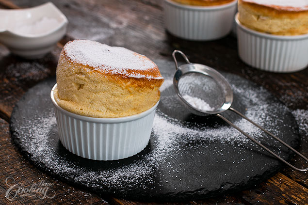

Vanilla Soufflé

I really love souffles as they are in the same time sophisticated yet simple and super delicious. I have already posted several recipes, either savory or sweet and they are all amazing and so easy to prepare. Souffles are the kind of dish you wanna prepare whenever you want to impress with your cooking skills. Even though many are hesitating to prepare them at home they are really not a big deal, and the process is really easy.
These vanilla souffles are simply out of this world. So fluffy with a mousse like texture, almost melting in your mouth, light and airy and full of vanilla flavor. Such an amazing way of finishing your lunch or dinner. Enjoy!
Prep time=20 mins || Cook time=25 mins || Total time=45 mins
Ingredients
Makes 4 servings
4 large eggs, separated
1 1/4 cup (300ml) milk
5 tbsp (50g) flour
3 tbsp (45g) sugar, for egg yolks
2 tsp (10g) vanilla extract
1/4 tsp (1g) salt
3 tbsp (45g) sugar, for egg whites
For coating the ramekins
softened butter and sugar
Topping
powdered sugar
Directions
Preheat oven to 375 F (190C). Place a baking sheet on the middle rack in the oven. Grease with butter 4 ramekins of 8 oz (230ml) capacity using a brush and making upward strokes (seems this step help the souffle rise evenly). Coat the bottom and sides with sugar. Discard excess sugar. Separate whites from yolks and set aside until ready to use. In a medium saucepan bring milk to a simmer. In another saucepan mix yolks with 3 tbsp sugar until slightly pale. Add flour and whisk to combine. Pour about a third of the hot milk over the egg yolks mixture to temper the yolks. Add the rest of the milk and return to heat. Bring to a boil, stirring continously; cook 1-2 minutes more or until thickened. Remove from heat and stir in vanilla extract. Transfer mixture to a larger bowl and let cool slightly. In a separate bowl whip whites with a pinch of salt until foamy. Gradually add remaining 3 tbsp of sugar and continue whipping until stiff peaks form. Gradually fold the whipped whites into the yolks mixture. Divide mixture evenly into the prepared ramekins. Place the ramekins onto the preheated baking sheet and bake for 25-30 minute until golden and puffed. Dust with powdered sugar and serve immediately. Enjoy!
Nutrition facts
1 Serving out of 4 - Calories:239, Fat:6.1g, Saturated Fat:2.3g, Carbohydrates:36.5g, Sugar:26.7g, Fiber:0.3g, Protein:9.4g , Cholesterol:170mg, Sodium 195mg 8%, Vitamin D 16mcg 79%, Calcium 117mg 9%, Iron 1mg 8%, Potassium 120mg 3%daily percent values are based on a 2000 calorie diet